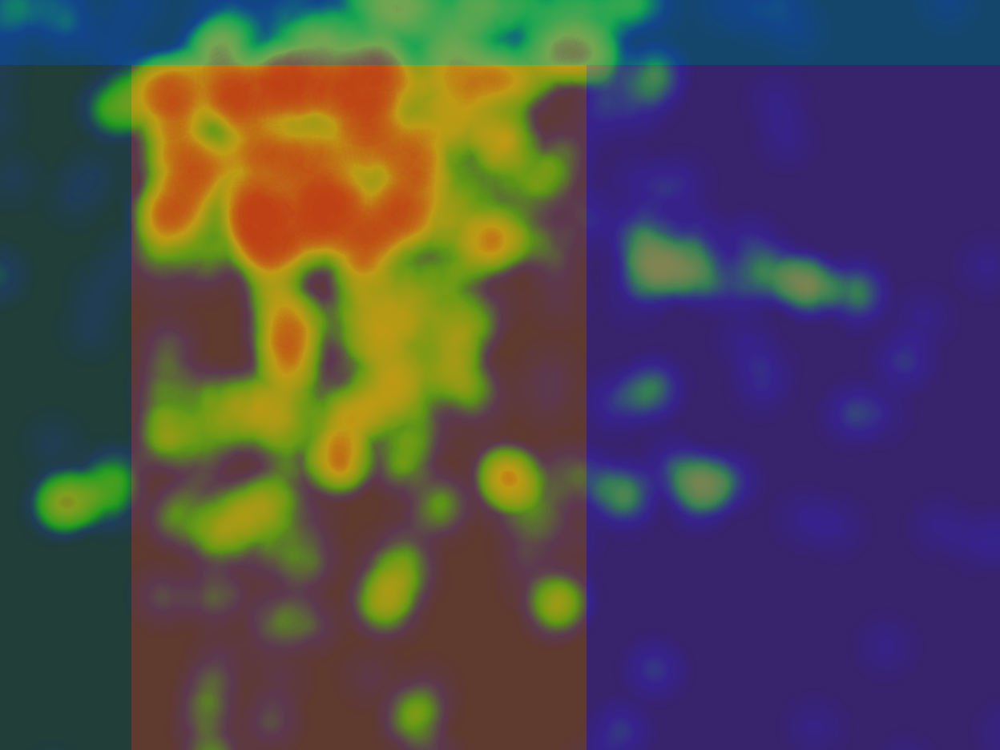
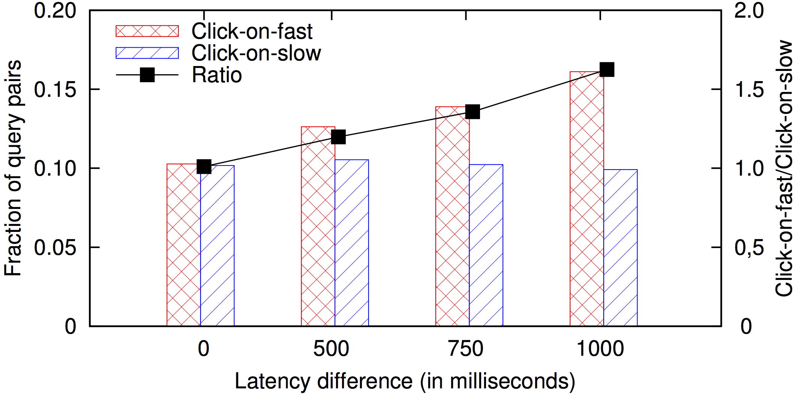

Scalable mouse tracking analysis for inferring user intent
Predicting User Engagement with Direct Displays in Web Search Using Mouse Cursor Features
I. Arapakis, and L. A. Leiva
Abstract - Predicting user engagement with direct displays (DD) is of paramount importance to commercial search engines, as well as to search performance evaluation. However, understanding within-content engagement on a web page is not a trivial task mainly because of two reasons: (1) engagement is subjective and different users may exhibit different behavioural patterns; (2) existing proxies of user engagement (e.g., clicks, dwell time) suffer from certain caveats, such as the well-known position bias, and are not as effective in discriminating between useful and non-useful components. In this paper, we conduct a crowdsourcing study and examine how users engage with a prominent web search engine component such as the knowledge module (KM) display. To this end, we collect and analyse more than 115k mouse cursor positions from 300 users, who perform a series of search tasks. Furthermore, we engineer a large number of meta-features which we use to predict different proxies of user engagement, including attention and usefulness. In our experiments, we demonstrate that our approach is able to predict more accurately different levels of user engagement and outperform existing baselines.
10.1145/2911451.2911505
PDF
Web search; knowledge module; direct displays; mouse cursor tracking; user engagement
Supplementary Material
{kind=link}
{kind=link}
Heatmaps of mouse movements for all users who did not notice the KM display (a) and all users who noticed the KM display (b). The SERP shown here is an example to illustrate its parts and structure.
 Fast or slow query response preference according to the click presence metric.
{kind=link}
Understanding Within-Content Engagement through Pattern Analysis of Mouse Gestures
I. Arapakis, M. Lalmas, and G. Valkanas
Abstract - The availability of large volumes of interaction data and scalable data mining techniques have made possible to study the online behaviour for millions of Web users. Part of the efforts have focused on understanding how users interact and engage with web content. However, the measurement of within-content engagement remains a difficult and unsolved task. This is because of the lack of standardised, well-validated methods for measuring engagement, especially in an online context. To address this gap, we perform a controlled user study where we observe how users respond to online news in the presence or lack of interest. We collect mouse tracking data, which are known to correlate with visual attention, and examine how cursor behaviour can inform user engagement measures. The proposed method does not use any pre-determined concepts to characterise the cursor patterns. We, rather, follow an unsupervised approach and use a large set of features engineered from our data to extract the cursor patterns. Our findings support the connection between gaze and cursor behaviour but also, and more importantly, reveal other dependencies, such as the correlation between cursor activity and experienced affect. Finally, we demonstrate the value of our method by predicting the outcome of online news reading experiences.
10.1145/2661829.2661909
PDF
Mouse gestures; user engagement; online news; pattern recognition; prediction
 Coverage of mouse gestures per participant and per cluster for interesting (I) and uninteresting (U) news.
Coverage of mouse gestures per participant and per cluster for interesting (I) and uninteresting (U) news.